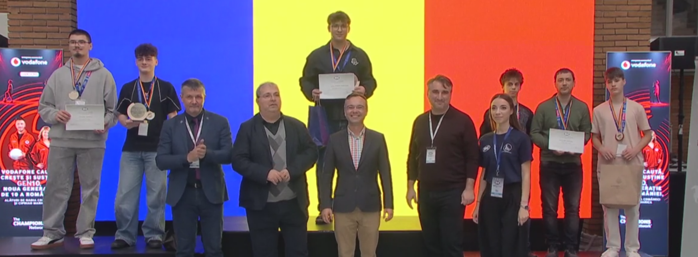

News / Eveniment Momentum
Argint pentru Momentum la RoboChallenge 2026: Peste șapte luni de muncă răsplătite pe podium
În luna noiembrie, echipa Momentum a urcat pe podium la una dintre cele mai mari competiții de profil din România, obținând locul 2 la categoria Freestyle Showcase Highschool în cadrul RoboChallenge 2026, eveniment găzduit de Universitatea Națională de Știință și Tehnologie POLITEHNICA București.

Acest rezultat nu a venit peste noapte, ci este rezultatul unui efort susținut care a început încă din primăvară. Mai exact, din luna aprilie, a fost inceput procesul lung de a aduce o idee de la stadiul de concept, la un sistem funcțional. Au urmat mai bine de șapte luni de muncă asiduă, în care fiecare etapă a însemnat proiectare, testare și zeci de iterații. De la asamblarea primelor piese și până la versiunea finală aliniată la start, proiectul a cerut sute de ore de dedicare, rezolvare a problemelor și o execuție meticuloasă din partea echipei.
Poziția secundă pe podiumul de la UNSTPB reprezintă, înainte de toate, o validare clară a muncii pe care am aplicat-o în acest an. A fost un prilej excelent de a demonstra că perseverența pe termen lung și atenția la detalii aduc rezultate solide într-un mediu competițional riguros, recunoscut pentru standardele sale ridicate.